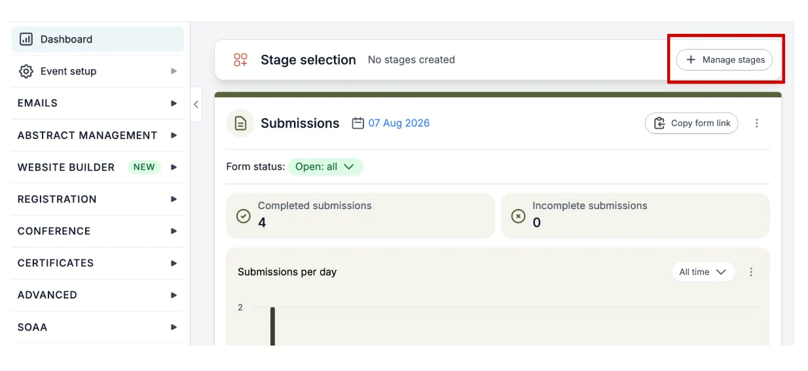
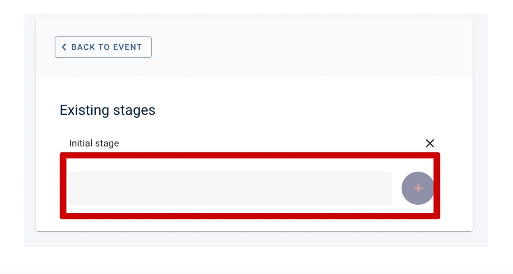
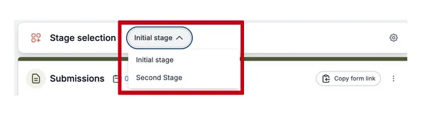
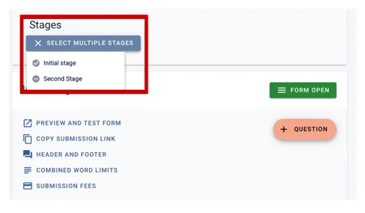
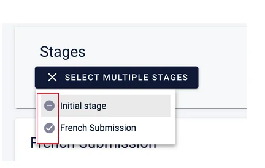
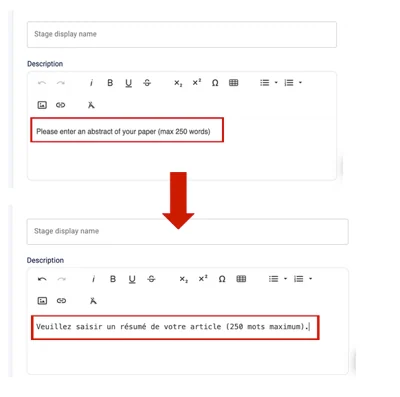
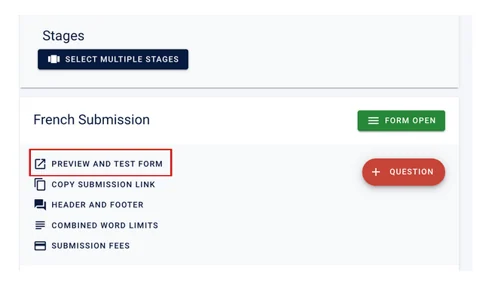

Creating a multi-language submission form
Learn how to create dual submission forms for any language.#
To enable a multi-language submission form, you will need to have the Multi-Stage add-on. To purchase this, please contact our sales team - sales@oxfordabstracts.com
How to create you Multi-Stage submission Forms
First, you’ll need to create your two forms, please follow the instructions below to do so.
Go to the Event dashboard.
On your dashboard at the top, you'll see a section named Stage Selection.
If you need to create your next stages, click the Manage stages button.

Then add your next stage name into the grey box and click the plus button.

Now return to your dashboard.
To set up the submission forms for the stages, ensure you are in the correct stage first, by selecting the stage you require.

Then navigate to Abstract Management → Submissions → Form & Setup
From here you can edit the submission questions for one or for multiple stages.
NB: All submission questions will be in all stages. This means that if you delete a question in one stage, it will also be deleted in the other stage(s). Instead, you can control whether or not questions are visible to the submitter and whether or not they are read-only.
Click on the Stage dropdown at the top of the screen to select the stages that you want to work on. In the example below you can see two stages Initial Stage and Second stage.

You can work on both simultaneously if you wish, by ensuring both options are selected.

How to change the language on your submission form
On your second form, you can change the text to your chosen language by going into the form and editing it.
To do this, go to the left-hand menu and click on Abstract Management > Submissions > Form & Set up
Then, at the top of the page, click on Select multiple stage and ensure the second submission form (in this example, the ‘French Submission’) is ticked, and the other form is unticked - please see example below.
Now open each individual question by clicking on it and deleting the English words and rewriting them with your chosen language.

You can preview what your form will look like by going back to Form & set up on the left-hand menu under Abstracts management > Submissions and clicking on Preview and Test Form.

If you need further support, please contact our Support Team via this Contact Form.
Did this page solve it?
Thanks — this helps us fix it.
Didn't solve it? Ask our support team
No question is too small, and there's no charge for asking. Raise a ticket and someone who knows the software will pick it up.